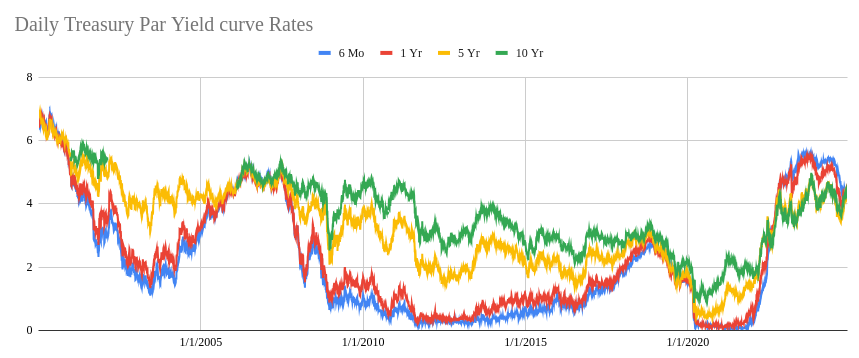
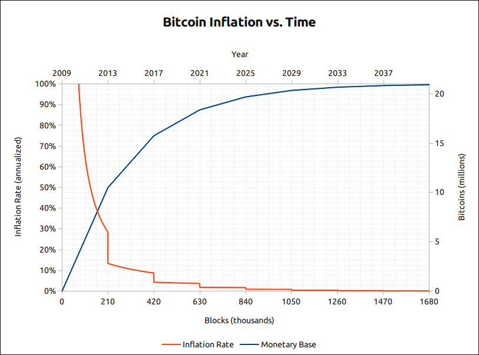
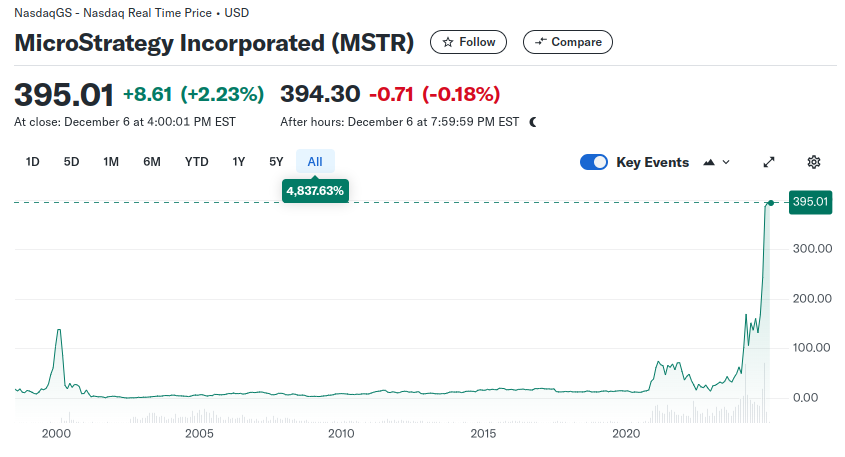

Unlocking Investment Opportunities with Bitcoin Treasury Management
In today's rapidly evolving financial landscape, investors and businesses are continually seeking innovative strategies to balance risk and reward. Traditional investment avenues are being reevaluated as market conditions fluctuate, prompting a growing interest in alternative assets. Bitcoin, in particular, has emerged as a significant tool in treasury management, offering unique opportunities for yield generation and portfolio diversification.
The Evolving Investment Landscape
Low Interest Rate Environments
In periods where interest rates hover near zero, traditional low-yield investments offer minimal returns. Holding Bitcoin becomes an attractive alternative as the opportunity cost diminishes. The potential for Bitcoin's price appreciation can outweigh the negligible gains from conventional assets, making it a compelling option for treasury allocation.
High Interest Rate Environments
Conversely, in high interest rate climates, Bitcoin serves as a valuable asset due to its low correlation with traditional financial instruments. Its historical performance demonstrates an ability to outperform even high-risk traditional investments, providing a hedge against market volatility and reducing overall portfolio risk.

Understanding Bitcoin Treasury Management
Hedge Against Inflation
Bitcoin's fixed supply of 21 million tokens and its transparent, verifiable scarcity on a public blockchain position it as a strong hedge against inflation. In times of economic uncertainty and potential currency debasement, Bitcoin offers a safeguard against central banks' inflationary actions, appealing to corporate treasurers seeking stability.

Strategic Financing
Companies like MicroStrategy have leveraged strategic financing methods, such as issuing convertible notes, to acquire more Bitcoin. This approach enables businesses to capitalize on Bitcoin's appreciation potential while effectively managing debt obligations.
The Importance of Diversification
Balancing capital risk with low-risk investments is crucial in crafting a resilient portfolio. Diversifying with alternative assets like Bitcoin can mitigate overall risk and reduce dependence on traditional financial assets. Incorporating Bitcoin into investment strategies allows for exposure to its growth potential while balancing the inherent volatility through diversification.
Real-World Case Study: MicroStrategy's Bitcoin Treasury Strategy
MicroStrategy serves as a prominent example for businesses considering incorporating Bitcoin into their treasury management strategies. Led by CEO Michael Saylor, MicroStrategy adopted Bitcoin as its primary treasury reserve asset in August 2020, becoming one of the first publicly traded companies to make such a significant investment.
Key Aspects of MicroStrategy's Bitcoin Strategy
- Early Adoption: By moving early, MicroStrategy gained a first-mover advantage, positioning itself as a leader in corporate Bitcoin adoption and attracting significant attention from investors and the media.
- Aggressive Acquisition: The company pursued a strategy of consistently accumulating Bitcoin, even utilizing financing methods like issuing convertible notes to fund purchases. As of the first quarter of 2024, MicroStrategy held approximately 214,400 Bitcoins, valued at around $15.2 billion.
- Treasury Reserve Asset: Transitioning from traditional treasury assets to Bitcoin, MicroStrategy aimed to protect its capital from inflation and generate higher returns than conventional investments.
- Transparency and Communication: MicroStrategy has been open about its Bitcoin holdings and strategy, regularly updating stakeholders and fostering trust and interest among investors.
Impact and Outcomes
- Stock Price Appreciation: The company's stock price has seen significant appreciation, closely tied to its Bitcoin holdings. This demonstrates how a company's valuation can be influenced by its exposure to Bitcoin, especially during bullish market conditions.
- Market Influence: MicroStrategy's approach has inspired other companies to consider Bitcoin as a treasury reserve asset, contributing to a broader trend of corporate Bitcoin adoption and further legitimizing Bitcoin as an institutional investment.
- Financial Performance: The company's financial results are closely linked to Bitcoin's price movements. While they have reported substantial unrealized gains during periods of price appreciation, they have also faced significant impairment charges when Bitcoin's price declines.
Challenges and Risks
- Volatility: Bitcoin's price volatility poses considerable risk to MicroStrategy's balance sheet, leading to large swings in reported earnings and highlighting the inherent uncertainty associated with holding Bitcoin as a corporate asset.
- Accounting Treatment: Current accounting standards require companies to mark down their Bitcoin holdings when prices fall but prevent them from marking them back up until the assets are sold, resulting in potential impairment charges on financial statements.
- Regulatory Uncertainty: The evolving regulatory landscape for cryptocurrencies introduces uncertainty regarding accounting and tax treatment, compliance requirements, and potential changes in regulations.
Lessons Learned
- Thorough Due Diligence: Businesses must conduct extensive research and analysis before investing in Bitcoin, understanding its fundamentals and risks, and developing a clear strategy that aligns with financial objectives and risk tolerance.
- Robust Governance: Establishing clear policies, roles, and responsibilities is crucial for managing Bitcoin holdings effectively and ensuring compliance with relevant regulations.
- Security Measures: Selecting reputable custodians and implementing strong security protocols are paramount to safeguard digital assets from theft or loss.
- Transparent Communication: Open dialogue with stakeholders about the company's Bitcoin strategy helps build trust and manage expectations, including clear disclosures in financial statements and public communications.

Leveraging Locked Bitcoin Rewards
Generating Yield on Bitcoin Holdings
While Bitcoin itself does not support staking due to its proof-of-work consensus mechanism, businesses can still generate additional yield on their Bitcoin holdings through various mechanisms. These strategies allow companies to maintain their Bitcoin positions while earning extra income, effectively leveraging their assets for greater returns.
Centralized Lending Platforms
Businesses can utilize centralized cryptocurrency lending platforms to lend their Bitcoin to borrowers in exchange for interest payments. These platforms act as intermediaries, managing the lending process and associated risks.
- Benefits: Earning interest on idle Bitcoin holdings, straightforward participation through user-friendly platforms.
- Risks: Counterparty risk if the platform becomes insolvent, security vulnerabilities leading to potential loss of assets, and fluctuations in lending rates.
Decentralized Finance (DeFi) Protocols
DeFi platforms offer decentralized alternatives for lending and borrowing cryptocurrencies. Businesses can participate in yield-generating opportunities by providing liquidity or lending Bitcoin-backed assets on these platforms.
- Benefits: Potentially higher yields compared to centralized platforms, increased control over assets, and participation in cutting-edge financial services.
- Risks: Smart contract vulnerabilities that could be exploited by malicious actors, market risks like impermanent loss due to price fluctuations, and the complexity of interacting with DeFi protocols requiring technical expertise.
Wrapped Bitcoin (WBTC)
Since Bitcoin doesn't natively support staking or DeFi participation, businesses can use Wrapped Bitcoin, an ERC-20 token pegged to Bitcoin's value, allowing them to engage with Ethereum-based DeFi platforms.
- Benefits: Access to a wide range of DeFi applications, including lending, borrowing, and liquidity provision, while retaining exposure to Bitcoin's price movements.
- Risks: Custodial risks associated with the entity holding the actual Bitcoin backing WBTC, potential discrepancies between WBTC and Bitcoin prices, and reliance on the Ethereum network's security and scalability.
Important Considerations
- Risk Assessment: Carefully evaluate the risk tolerance of your business before engaging in yield-generating activities, acknowledging that higher yields often come with increased risks.
- Due Diligence: Conduct thorough research on lending platforms or DeFi protocols, assessing their security measures, track record, and regulatory compliance.
- Security Measures: Prioritize platforms with robust security protocols, including multi-signature wallets, cold storage options, and insurance coverage for digital assets.
Regulatory Compliance: Ensure that all activities comply with relevant laws and regulations, which may vary by jurisdiction, and stay informed about the evolving regulatory landscape for cryptocurrencies.
Practical Insights for Businesses and Individuals
Treasury Management Best Practices
- Invest in Secure Technology: Utilize platforms that combine multi-party computation (MPC) and hardware security modules (HSM) for enhanced security in treasury management.
- Prioritize Security Certifications: Choose providers with top-tier security and privacy certifications, such as CCSS, SOC 2 Type II, and ISO standards, ensuring third-party insurance covers assets in storage and transit.
- Ensure Compliance: Align your treasury setup with regional regulatory requirements and implement transaction screenings against pertinent risks.
- Utilize Policies and Controls: Leverage platforms offering customizable policies and controls to meet specific regulatory and risk management needs.
- Select a Reliable and Scalable Platform: Evaluate service-level agreements (SLAs), uptime, and support when choosing crypto treasury management solutions.
Importance of Due Diligence
- Understanding Bitcoin: Comprehend Bitcoin's properties, including its volatility, security aspects, and potential impact on financial statements.
- Developing a Strategy: Define clear investment goals, risk tolerance, and how Bitcoin aligns with overall financial objectives.
- Evaluating Custody Solutions: Opt for reputable, secure custodians subject to banking regulations, considering diversification through multiple custodial accounts and assessing insurance limits.
- Selecting Brokers: Partner with experienced brokers who specialize in large Bitcoin transactions and adhere to best practices, avoiding unnecessary risks.
- Determining Storage Methods: Decide on appropriate storage methods—hot wallets for liquidity or cold storage for enhanced security—maximizing holdings in cold storage for long-term strategies and confirming withdrawal timeframes to assess liquidity risks.
- Negotiating Fees: Understand and negotiate setup, custody, and transaction fees based on asset size and transaction frequency.
- Securing Contractual Protections: Ensure custodians offer robust security systems, insurance, and clear policies regarding forks and airdrops, with contractual representations about security measures.
Conclusion
Balancing risk and reward is more critical than ever in today's dynamic financial environment. Bitcoin presents unique opportunities for yield generation and portfolio diversification, serving as both a hedge against inflation and a tool for strategic growth. By incorporating Bitcoin into treasury management and leveraging mechanisms like lending platforms and DeFi protocols, businesses and individuals can unlock new avenues for financial advancement, as demonstrated by MicroStrategy's pioneering approach.